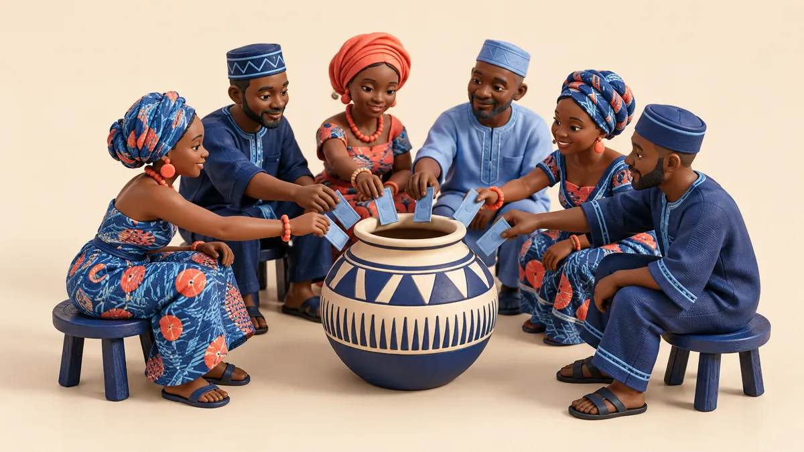

Qu’est-ce qu’une tontine ?
Une tontine est un groupe de personnes qui versent chacune la même somme à intervalle régulier (chaque semaine, chaque mois). À chaque tour, un membre reçoit la totalité des versements : on dit qu’il « prend la main » ou qu’il « reçoit le pot ». Quand chaque membre a reçu une fois, le cycle est terminé. Le groupe peut alors en recommencer un autre.
Elle repose sur la confiance plutôt que sur un contrat : on cotise entre collègues, voisins, commerçants d’un même marché, membres d’une famille ou d’une association. Un organisateur, souvent une figure respectée du groupe, tient les comptes et relance les retardataires.
La tontine existe partout en Afrique, sous des noms différents :
- Tontine (Afrique francophone)
- Susu (Ghana)
- Esusu, Ajo (Nigeria)
- Njangi (Cameroun)
- Likelemba (RD Congo)
- Stokvel (Afrique du Sud)
- Chilimba (Zambie)
À ne pas confondre avec la « tontine » vendue par certains assureurs en France, un produit de placement collectif réservé aux survivants. Cette page parle de la tontine africaine, celle des groupes qui cotisent et reçoivent à tour de rôle.
Pourquoi la tontine n’est pas une épargne
« La tontine n’est pas de l’épargne, c’est un décalage de trésorerie. »
Élysée Johnson, fondateur d’EFAPrenons un exemple simple. Dix personnes cotisent 50 000 FCFA par mois. Chaque mois, l’une d’elles reçoit 500 000 FCFA. Au bout de dix mois, tout le monde a versé 500 000 FCFA et tout le monde a reçu 500 000 FCFA.
Personne n’a gagné un franc. Le groupe n’a créé aucun argent nouveau : il a seulement changé le moment où chacun dispose de la somme.
- Celui qui reçoit au 1er tour touche 500 000 FCFA après n’avoir versé que 50 000. Il doit encore 450 000 au groupe : il a emprunté sans intérêt.
- Celui qui reçoit au 10e tour a versé 500 000 FCFA avant de recevoir 500 000 : il a prêté sans intérêt aux autres. S’il y a eu de l’inflation pendant ces dix mois, ses 500 000 FCFA achètent moins qu’au départ.
L’épargne, la vraie, c’est l’argent qui reste. Dans une tontine, ce qui compte n’est donc pas ce que vous recevez, mais ce que vous gardez de ce que vous recevez. Comment commencer à épargner →
Premier ou dernier tour : ce que vaut votre rang
Même groupe : dix membres, 50 000 FCFA par mois. Voici la position de chacun au moment où il reçoit.
| Tour | Déjà versé | Reçu | Position |
|---|---|---|---|
| 1er | 50 000 | 500 000 | emprunte 450 000 |
| 3e | 150 000 | 500 000 | emprunte 350 000 |
| 5e | 250 000 | 500 000 | emprunte 250 000 |
| 8e | 400 000 | 500 000 | emprunte 100 000 |
| 10e | 500 000 | 500 000 | a prêté tout le cycle |
Montants en FCFA. Exemple pédagogique, sans frais ni commission d’organisateur.
Le bon rang dépend de votre projet. Recevoir tôt est précieux si l’argent sert un besoin urgent ou un investissement qui rapporte (stock, équipement). Recevoir tard convient à qui veut se forcer à mettre de côté, mais c’est la position la plus exposée au risque qu’un membre cesse de payer.
Ce que la tontine fait très bien
- La discipline. Le rendez-vous et le regard du groupe obligent à cotiser, là où l’on repousserait seul.
- L’accès à une grosse somme, sans banque, sans dossier, sans garantie.
- Le crédit sans intérêt pour ceux qui reçoivent tôt.
- La solidarité. Le groupe sait souvent arranger un tour pour un membre qui traverse un coup dur.
- La confiance, qui est elle-même un capital : la confiance précède le capital.
Les risques à connaître
- Le défaut. Un membre reçoit tôt, puis cesse de payer. Les derniers sont les plus exposés.
- L’organisateur. Il tient l’argent. Sa rigueur et son honnêteté font la sécurité du groupe.
- L’absence de rendement. L’argent ne rapporte rien pendant qu’il tourne, et l’inflation le grignote.
- Le pot qui s’évapore. Sans plan, la somme reçue est absorbée en quelques semaines par les dépenses et les demandes des proches.
- L’emprunt pour cotiser. Emprunter pour payer sa part transforme un outil d’épargne en piège de dettes.
EFA aide chacun à passer du cercle, l’argent qui tourne, à la spirale, l’argent qui reste.
Du cercle à la spirale : garder une part
Une tontine classique est un cercle : l’argent tourne, puis repart. À la fin du dernier tour, il ne reste rien au groupe. La spirale commence dès qu’une part de l’argent qui circule est gardée.
Seul, avec votre argent
Avant de recevoir, décidez quelle part vous gardez. Même 10 % de 500 000 FCFA, soit 50 000 FCFA mis de côté à chaque cycle, deviennent une réserve qui grandit au lieu de disparaître.
Ensemble, avec votre groupe
Le groupe peut garder une part de chaque tour dans une réserve commune, placée et suivie par tous. Le cercle devient spirale : le groupe accumule un capital au lieu de seulement faire tourner l’argent.
Choisir sa tontine : 6 questions à poser avant d’entrer
- Qui sont les membres ? Des personnes que vous connaissez, ou fortement recommandées.
- Qui organise, et comment sont tenus les comptes ?
- Les règles sont-elles écrites ? Montant, dates, ordre des tours, pénalités de retard.
- Que se passe-t-il si quelqu’un ne paie pas ? Qui compense, et comment ?
- Comment est fixé l’ordre des tours ? Tirage, besoin, ancienneté, enchères.
- Que ferez-vous de la somme reçue ? Décidez-le avant, pas le jour où elle arrive.
Vous faites une tontine ? Racontez-nous
EFA mène l’enquête « L’argent de la tontine » pour documenter la tontine telle qu’elle se pratique vraiment. Cinq minutes, anonyme. Même si vous ne faites pas de tontine, votre réponse compte.
Répondre à l’enquêteQuestions fréquentes sur la tontine
Qu’est-ce qu’une tontine ?
Un groupe de personnes qui versent chacune la même somme à intervalle régulier. À chaque tour, un membre reçoit la totalité des versements. Quand tout le monde a reçu une fois, le cycle est terminé.
La tontine est-elle une épargne ?
Non. Elle déplace l’argent dans le temps entre les membres : ceux qui reçoivent tôt empruntent sans intérêt, ceux qui reçoivent tard prêtent sans intérêt. C’est un décalage de trésorerie. L’épargne commence quand on garde une part de ce que l’on reçoit.
Vaut-il mieux recevoir en premier ou en dernier ?
Recevoir tôt revient à emprunter sans intérêt, utile pour un besoin immédiat ou un investissement. Recevoir tard revient à mettre de côté sans rendement, et l’inflation réduit la valeur de la somme. Le bon tour dépend de ce que vous ferez de l’argent.
Comment limiter le risque de défaut ?
Choisir des membres connus ou fortement recommandés, écrire les règles, désigner un organisateur responsable et prévoir ce qui se passe si un membre cesse de payer après avoir reçu.
Que faire de l’argent reçu ?
Décider avant de recevoir : la part dépensée, la part gardée, la part investie. Sans décision préalable, l’argent repart aussi vite qu’il est arrivé. La part gardée, même petite, est le début de la spirale.